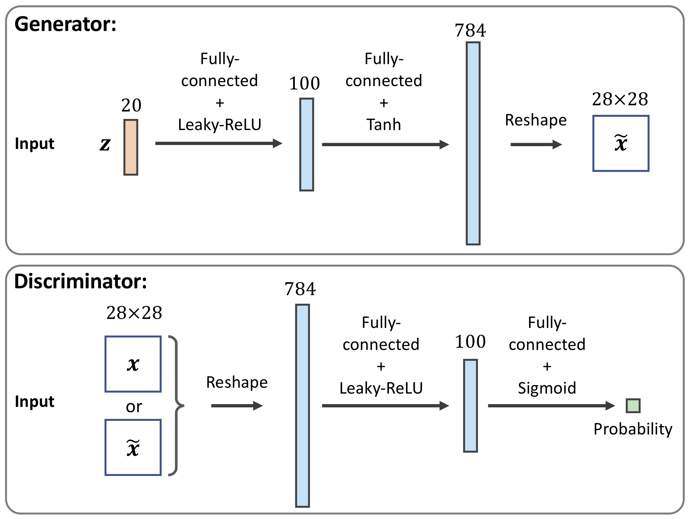

Advanced machine learning and data analysis for the physical sciences
April 30, 2024
Plans for the week of April 29- May 3, 2024
- Summary of Variational Autoencoders
- Generative Adversarial Networks (GANs)
- Start discussion of diffusion models
Readings
- Reading recommendation: Goodfellow et al, for GANs see sections 20.10-20.11
- For codes and background, see Raschka et al, Machine with PyTorch and Scikit-Learn, chapter 17, see https://github.com/rasbt/python-machine-learning-book-3rd-edition/tree/master/ch17 for codes
- Babcock and Bali, Generative AI with Python and TensorFlow2, chapter 6 and codes at https://github.com/raghavbali/generative_ai_with_tensorflow/blob/master/Chapter_6/conditional_gan.ipynb
Summary of Variational Autoencoders (VAEs)
In our short summary of VAes, we will also remind you about the mathematics of Boltzmann machines and the Kullback-Leibler divergence, leading to used ways to optimize the probability distributions, namely what is called
- Contrastive optimization
We will also discuss what is called
- Score-based models
Boltzmann machines and energy-based models and contrastive optimization
Energy models
For Boltzmann machines we defined a domain \( \boldsymbol{X} \) of stochastic variables \( \boldsymbol{X}= \{x_0,x_1, \dots , x_{n-1}\} \) with a pertinent probability distribution
$$ p(\boldsymbol{X})=\prod_{x_i\in \boldsymbol{X}}p(x_i), $$where we have assumed that the random varaibles \( x_i \) are all independent and identically distributed (iid).
Probability model
We defined a probability
$$ p(x_i,h_j;\boldsymbol{\Theta}) = \frac{f(x_i,h_j;\boldsymbol{\Theta})}{Z(\boldsymbol{\Theta})}, $$where \( f(x_i,h_j;\boldsymbol{\Theta}) \) is a function which we assume is larger or equal than zero and obeys all properties required for a probability distribution and \( Z(\boldsymbol{\Theta}) \) is a normalization constant. Inspired by statistical mechanics, we call it often for the partition function. It is defined as (assuming that we have discrete probability distributions)
$$ Z(\boldsymbol{\Theta})=\sum_{x_i\in \boldsymbol{X}}\sum_{h_j\in \boldsymbol{H}} f(x_i,h_j;\boldsymbol{\Theta}). $$Marginal and conditional probabilities
We can in turn define the marginal probabilities
$$ p(x_i;\boldsymbol{\Theta}) = \frac{\sum_{h_j\in \boldsymbol{H}}f(x_i,h_j;\boldsymbol{\Theta})}{Z(\boldsymbol{\Theta})}, $$and
$$ p(h_i;\boldsymbol{\Theta}) = \frac{\sum_{x_i\in \boldsymbol{X}}f(x_i,h_j;\boldsymbol{\Theta})}{Z(\boldsymbol{\Theta})}. $$Partition function
Note the change to a vector notation. A variable like \( \boldsymbol{x} \) represents now a specific configuration. We can generate an infinity of such configurations. The final partition function is then the sum over all such possible configurations, that is
$$ Z(\boldsymbol{\Theta})=\sum_{x_i\in \boldsymbol{X}}\sum_{h_j\in \boldsymbol{H}} f(x_i,h_j;\boldsymbol{\Theta}), $$changes to
$$ Z(\boldsymbol{\Theta})=\sum_{\boldsymbol{x}}\sum_{\boldsymbol{h}} f(\boldsymbol{x},\boldsymbol{h};\boldsymbol{\Theta}). $$If we have a binary set of variable \( x_i \) and \( h_j \) and \( M \) values of \( x_i \) and \( N \) values of \( h_j \) we have in total \( 2^M \) and \( 2^N \) possible \( \boldsymbol{x} \) and \( \boldsymbol{h} \) configurations, respectively.
We see that even for the modest binary case, we can easily approach a number of configuration which is not possible to deal with.
Optimization problem
At the end, we are not interested in the probabilities of the hidden variables. The probability we thus want to optimize is
$$ p(\boldsymbol{X};\boldsymbol{\Theta})=\prod_{x_i\in \boldsymbol{X}}p(x_i;\boldsymbol{\Theta})=\prod_{x_i\in \boldsymbol{X}}\left(\frac{\sum_{h_j\in \boldsymbol{H}}f(x_i,h_j;\boldsymbol{\Theta})}{Z(\boldsymbol{\Theta})}\right), $$which we rewrite as
$$ p(\boldsymbol{X};\boldsymbol{\Theta})=\frac{1}{Z(\boldsymbol{\Theta})}\prod_{x_i\in \boldsymbol{X}}\left(\sum_{h_j\in \boldsymbol{H}}f(x_i,h_j;\boldsymbol{\Theta})\right). $$Further simplifications
We simplify further by rewriting it as
$$ p(\boldsymbol{X};\boldsymbol{\Theta})=\frac{1}{Z(\boldsymbol{\Theta})}\prod_{x_i\in \boldsymbol{X}}f(x_i;\boldsymbol{\Theta}), $$where we used \( p(x_i;\boldsymbol{\Theta}) = \sum_{h_j\in \boldsymbol{H}}f(x_i,h_j;\boldsymbol{\Theta}) \). The optimization problem is then
$$ {\displaystyle \mathrm{arg} \hspace{0.1cm}\max_{\boldsymbol{\boldsymbol{\Theta}}\in {\mathbb{R}}^{p}}} \hspace{0.1cm}p(\boldsymbol{X};\boldsymbol{\Theta}). $$Optimizing the logarithm instead
Computing the derivatives with respect to the parameters \( \boldsymbol{\Theta} \) is easier (and equivalent) with taking the logarithm of the probability. We will thus optimize
$$ {\displaystyle \mathrm{arg} \hspace{0.1cm}\max_{\boldsymbol{\boldsymbol{\Theta}}\in {\mathbb{R}}^{p}}} \hspace{0.1cm}\log{p(\boldsymbol{X};\boldsymbol{\Theta})}, $$which leads to
$$ \nabla_{\boldsymbol{\Theta}}\log{p(\boldsymbol{X};\boldsymbol{\Theta})}=0. $$Expression for the gradients
This leads to the following equation
$$ \nabla_{\boldsymbol{\Theta}}\log{p(\boldsymbol{X};\boldsymbol{\Theta})}=\nabla_{\boldsymbol{\Theta}}\left(\sum_{x_i\in \boldsymbol{X}}\log{f(x_i;\boldsymbol{\Theta})}\right)-\nabla_{\boldsymbol{\Theta}}\log{Z(\boldsymbol{\Theta})}=0. $$The first term is called the positive phase and we assume that we have a model for the function \( f \) from which we can sample values. Below we will develop an explicit model for this. The second term is called the negative phase and is the one which leads to more difficulties.
Contrastive optimization
The evaluation of these two terms leads to what in the literature is called contrastive optimization.
If we optimize the negative log of the PDF, the aboves phases simply change sign.
For a further discussion of energy-based models, see the notes by Philip Lippe at https://uvadlc-notebooks.readthedocs.io/en/latest/tutorial_notebooks/tutorial8/Deep_Energy_Models.html
The derivative of the partition function
The partition function, defined above as
$$ Z(\boldsymbol{\Theta})=\sum_{x_i\in \boldsymbol{X}}\sum_{h_j\in \boldsymbol{H}} f(x_i,h_j;\boldsymbol{\Theta}), $$is in general the most problematic term. In principle both \( x \) and \( h \) can span large degrees of freedom, if not even infinitely many ones, and computing the partition function itself is often not desirable or even feasible. The above derivative of the partition function can however be written in terms of an expectation value which is in turn evaluated using Monte Carlo sampling and the theory of Markov chains, popularly shortened to MCMC (or just MC$^2$).
Explicit expression for the derivative
We can rewrite
$$ \nabla_{\boldsymbol{\Theta}}\log{Z(\boldsymbol{\Theta})}=\frac{\nabla_{\boldsymbol{\Theta}}Z(\boldsymbol{\Theta})}{Z(\boldsymbol{\Theta})}, $$which reads in more detail
$$ \nabla_{\boldsymbol{\Theta}}\log{Z(\boldsymbol{\Theta})}=\frac{\nabla_{\boldsymbol{\Theta}} \sum_{x_i\in \boldsymbol{X}}f(x_i;\boldsymbol{\Theta}) }{Z(\boldsymbol{\Theta})}. $$We can rewrite the function \( f \) (we have assumed that is larger or equal than zero) as \( f=\exp{\log{f}} \). We can then reqrite the last equation as
$$ \nabla_{\boldsymbol{\Theta}}\log{Z(\boldsymbol{\Theta})}=\frac{ \sum_{x_i\in \boldsymbol{X}} \nabla_{\boldsymbol{\Theta}}\exp{\log{f(x_i;\boldsymbol{\Theta})}} }{Z(\boldsymbol{\Theta})}. $$Final expression
Taking the derivative gives us
$$ \nabla_{\boldsymbol{\Theta}}\log{Z(\boldsymbol{\Theta})}=\frac{ \sum_{x_i\in \boldsymbol{X}}f(x_i;\boldsymbol{\Theta}) \nabla_{\boldsymbol{\Theta}}\log{f(x_i;\boldsymbol{\Theta})} }{Z(\boldsymbol{\Theta})}, $$which is the expectation value of \( \log{f} \)
$$ \nabla_{\boldsymbol{\Theta}}\log{Z(\boldsymbol{\Theta})}=\sum_{x_i\in \boldsymbol{X}}p(x_i;\boldsymbol{\Theta}) \nabla_{\boldsymbol{\Theta}}\log{f(x_i;\boldsymbol{\Theta})}, $$that is
$$ \nabla_{\boldsymbol{\Theta}}\log{Z(\boldsymbol{\Theta})}=\mathbb{E}(\log{f(x_i;\boldsymbol{\Theta})}). $$This quantity is evaluated using Monte Carlo sampling, with Gibbs sampling as the standard sampling rule.
Generative model, basic overview (Borrowed from Rashcka et al)

Reminder on VAEs
Mathematically, we can imagine the latent variables and the data we observe as modeled by a joint distribution \( p(\boldsymbol{x}, \boldsymbol{h};\boldsymbol{\Theta}) \). Recall one approach of generative modeling, termed likelihood-based, is to learn a model to maximize the likelihood \( p(\boldsymbol{x};\boldsymbol{\Theta}) \) of all observed \( \boldsymbol{x} \). There are two ways we can manipulate this joint distribution to recover the likelihood of purely our observed data \( p(\boldsymbol{x};\boldsymbol{\Theta}) \); we can explicitly marginalize out the latent variable \( \boldsymbol{h} \)
$$ \begin{equation*} p(\boldsymbol{x}) = \int p(\boldsymbol{x}, \boldsymbol{h})d\boldsymbol{h} \end{equation*} $$or, we could also appeal to the chain rule of probability
$$ \begin{equation*} p(\boldsymbol{x}) = \frac{p(\boldsymbol{x}, \boldsymbol{h})}{p(\boldsymbol{h}|\boldsymbol{x})} \end{equation*} $$We suppress here the dependence on the optimization parameters \( \boldsymbol{\Theta} \).
=====
What is a GAN?
A GAN is a deep neural network which consists of two networks, a so-called generator network and a discriminating network, or just discriminator. Through several iterations of generation and discrimination, the idea is that these networks will train each other, while also trying to outsmart each other.
In its simplest version, the two networks could be two standard neural networks with a given number of hidden of hidden layers and parameters to train.
What is a generator network?
A generator network is often a deep network which uses existing data to generate new data (from for example simulations of physical systems, imagesm video, audio and more) from randomly generated inputs, the so-called latent space. Training the network allows us to generate say new data, images etc. As an example a generator network could for example be a Boltzmann machine as discussed earlier. This machine is trained to produce for example a quantum mechanical probability distribution.
It can be a simple neural network with an input layer and an output layer and a given number of hidden layers.
And what is a discriminator network?
A discriminator tries to distinguish between real data and those generated by the abovementioned generator.
Appplications of GANs
There are exteremely many applications of GANs
- Image generation
- Text-to-image analysis
- Face-aging
- Image-to-image translation
- Video synthesis
- High-resolution image generation
- Completing missing parts of images and much more
Discriminator versus generator (Borrowed from Rashcka et al)

Generative Adversarial Networks
Generative Adversarial Networks are a type of unsupervised machine learning algorithm proposed by Goodfellow et. al, see https://arxiv.org/pdf/1406.2661.pdf in 2014 (Read the paper first it's only 6 pages). The simplest formulation of the model is based on a game theoretic approach, zero sum game, where we pit two neural networks against one another. We define two rival networks, one generator \( g \), and one discriminator \( d \). The generator directly produces samples
$$ x = g(z; \theta^{(g)}). $$Discriminator
The discriminator attempts to distinguish between samples drawn from the training data and samples drawn from the generator. In other words, it tries to tell the difference between the fake data produced by \( g \) and the actual data samples we want to do prediction on. The discriminator outputs a probability value given by
$$ d(x; \theta^{(d)}). $$indicating the probability that \( x \) is a real training example rather than a fake sample the generator has generated.
Zero-sum game
The simplest way to formulate the learning process in a generative adversarial network is a zero-sum game, in which a function
$$ v(\theta^{(g)}, \theta^{(d)}), $$determines the reward for the discriminator, while the generator gets the conjugate reward
$$ -v(\theta^{(g)}, \theta^{(d)}) $$Maximizing reward
During learning both of the networks maximize their own reward function, so that the generator gets better and better at tricking the discriminator, while the discriminator gets better and better at telling the difference between the fake and real data. The generator and discriminator alternate on which one trains at one time (i.e. for one epoch). In other words, we keep the generator constant and train the discriminator, then we keep the discriminator constant to train the generator and repeat. It is this back and forth dynamic which lets GANs tackle otherwise intractable generative problems. As the generator improves with training, the discriminator's performance gets worse because it cannot easily tell the difference between real and fake. If the generator ends up succeeding perfectly, the the discriminator will do no better than random guessing i.e. 50\%.
Progression in training
This progression in the training poses a problem for the convergence criteria for GANs. The discriminator feedback gets less meaningful over time, if we continue training after this point then the generator is effectively training on junk data which can undo the learning up to that point. Therefore, we stop training when the discriminator starts outputting \( 1/2 \) everywhere. At convergence we have
$$ g^* = \underset{g}{\mathrm{argmin}}\hspace{2pt} \underset{d}{\mathrm{max}}v(\theta^{(g)}, \theta^{(d)}), $$Deafault choice
The default choice for \( v \) is
$$ v(\theta^{(g)}, \theta^{(d)}) = \mathbb{E}_{x\sim p_\mathrm{data}}\log d(x) + \mathbb{E}_{x\sim p_\mathrm{model}} \log (1 - d(x)). $$Design of GANs
The main motivation for the design of GANs is that the learning process requires neither approximate inference (variational autoencoders for example) nor approximation of a partition function. In the case where
$$ \underset{d}{\mathrm{max}}v(\theta^{(g)}, \theta^{(d)}) $$is convex in \( \theta^{(g)} \) then the procedure is guaranteed to converge and is asymptotically consistent ( Seth Lloyd on QuGANs ). This is in general not the case and it is possible to get situations where the training process never converges because the generator and discriminator chase one another around in the parameter space indefinitely.
Steps in building a GAN (Borrowed from Rashcka et al)

More references
A much deeper discussion on the currently open research problem of GAN convergence is available from https://www.deeplearningbook.org/contents/generative_models.html. To anyone interested in learning more about GANs it is a highly recommended read. Direct quote: In this best-performing formulation, the generator aims to increase the log probability that the discriminator makes a mistake, rather than aiming to decrease the log probability that the discriminator makes the correct prediction. Another interesting read can be found at https://arxiv.org/abs/1701.00160.
Writing Our First Generative Adversarial Network
This part is best seen using the jupyter-notebook. We follow here closely the code developed by Raschka et al from chapter 17 of their textbook, see https://github.com/rasbt/python-machine-learning-book-3rd-edition/tree/master/ch17 for codes.
Implementing the networks (Borrowed from Rashcka et al)

Code elements
import torch
print(torch.__version__)
print("GPU Available:", torch.cuda.is_available())
if torch.cuda.is_available():
device = torch.device("cuda:0")
else:
device = "cpu"
import torch.nn as nn
import numpy as np
import matplotlib.pyplot as plt
Setting up the GAN
## define a function for the generator:
def make_generator_network(
input_size=20,
num_hidden_layers=1,
num_hidden_units=100,
num_output_units=784):
model = nn.Sequential()
for i in range(num_hidden_layers):
model.add_module(f'fc_g{i}',
nn.Linear(input_size,
num_hidden_units))
model.add_module(f'relu_g{i}',
nn.LeakyReLU())
input_size = num_hidden_units
model.add_module(f'fc_g{num_hidden_layers}',
nn.Linear(input_size, num_output_units))
model.add_module('tanh_g', nn.Tanh())
return model
## define a function for the discriminator:
def make_discriminator_network(
input_size,
num_hidden_layers=1,
num_hidden_units=100,
num_output_units=1):
model = nn.Sequential()
for i in range(num_hidden_layers):
model.add_module(f'fc_d{i}',
nn.Linear(input_size,
num_hidden_units, bias=False))
model.add_module(f'relu_d{i}',
nn.LeakyReLU())
model.add_module('dropout', nn.Dropout(p=0.5))
input_size = num_hidden_units
model.add_module(f'fc_d{num_hidden_layers}',
nn.Linear(input_size, num_output_units))
model.add_module('sigmoid', nn.Sigmoid())
return model
Printing the model
image_size = (28, 28)
z_size = 20
gen_hidden_layers = 1
gen_hidden_size = 100
disc_hidden_layers = 1
disc_hidden_size = 100
torch.manual_seed(1)
gen_model = make_generator_network(
input_size=z_size,
num_hidden_layers=gen_hidden_layers,
num_hidden_units=gen_hidden_size,
num_output_units=np.prod(image_size))
print(gen_model)
disc_model = make_discriminator_network(
input_size=np.prod(image_size),
num_hidden_layers=disc_hidden_layers,
num_hidden_units=disc_hidden_size)
print(disc_model)
Defining the training set
import torchvision
from torchvision import transforms
image_path = './'
transform = transforms.Compose([
transforms.ToTensor(),
transforms.Normalize(mean=(0.5), std=(0.5)),
])
mnist_dataset = torchvision.datasets.MNIST(root=image_path,
train=True,
transform=transform,
download=True)
example, label = next(iter(mnist_dataset))
print(f'Min: {example.min()} Max: {example.max()}')
print(example.shape)
Defining the training set, part 2
def create_noise(batch_size, z_size, mode_z):
if mode_z == 'uniform':
input_z = torch.rand(batch_size, z_size)*2 - 1
elif mode_z == 'normal':
input_z = torch.randn(batch_size, z_size)
return input_z
from torch.utils.data import DataLoader
batch_size = 32
dataloader = DataLoader(mnist_dataset, batch_size, shuffle=False)
input_real, label = next(iter(dataloader))
input_real = input_real.view(batch_size, -1)
torch.manual_seed(1)
mode_z = 'uniform' # 'uniform' vs. 'normal'
input_z = create_noise(batch_size, z_size, mode_z)
print('input-z -- shape:', input_z.shape)
print('input-real -- shape:', input_real.shape)
g_output = gen_model(input_z)
print('Output of G -- shape:', g_output.shape)
d_proba_real = disc_model(input_real)
d_proba_fake = disc_model(g_output)
print('Disc. (real) -- shape:', d_proba_real.shape)
print('Disc. (fake) -- shape:', d_proba_fake.shape)
Training the GAN
loss_fn = nn.BCELoss()
## Loss for the Generator
g_labels_real = torch.ones_like(d_proba_fake)
g_loss = loss_fn(d_proba_fake, g_labels_real)
print(f'Generator Loss: {g_loss:.4f}')
## Loss for the Discriminator
d_labels_real = torch.ones_like(d_proba_real)
d_labels_fake = torch.zeros_like(d_proba_fake)
d_loss_real = loss_fn(d_proba_real, d_labels_real)
d_loss_fake = loss_fn(d_proba_fake, d_labels_fake)
print(f'Discriminator Losses: Real {d_loss_real:.4f} Fake {d_loss_fake:.4f}')
More on training
batch_size = 64
torch.manual_seed(1)
np.random.seed(1)
## Set up the dataset
mnist_dl = DataLoader(mnist_dataset, batch_size=batch_size,
shuffle=True, drop_last=True)
## Set up the models
gen_model = make_generator_network(
input_size=z_size,
num_hidden_layers=gen_hidden_layers,
num_hidden_units=gen_hidden_size,
num_output_units=np.prod(image_size)).to(device)
disc_model = make_discriminator_network(
input_size=np.prod(image_size),
num_hidden_layers=disc_hidden_layers,
num_hidden_units=disc_hidden_size).to(device)
## Loss function and optimizers:
loss_fn = nn.BCELoss()
g_optimizer = torch.optim.Adam(gen_model.parameters())
d_optimizer = torch.optim.Adam(disc_model.parameters())
## Train the discriminator
def d_train(x):
disc_model.zero_grad()
# Train discriminator with a real batch
batch_size = x.size(0)
x = x.view(batch_size, -1).to(device)
d_labels_real = torch.ones(batch_size, 1, device=device)
d_proba_real = disc_model(x)
d_loss_real = loss_fn(d_proba_real, d_labels_real)
# Train discriminator on a fake batch
input_z = create_noise(batch_size, z_size, mode_z).to(device)
g_output = gen_model(input_z)
d_proba_fake = disc_model(g_output)
d_labels_fake = torch.zeros(batch_size, 1, device=device)
d_loss_fake = loss_fn(d_proba_fake, d_labels_fake)
# gradient backprop & optimize ONLY D's parameters
d_loss = d_loss_real + d_loss_fake
d_loss.backward()
d_optimizer.step()
return d_loss.data.item(), d_proba_real.detach(), d_proba_fake.detach()
## Train the generator
def g_train(x):
gen_model.zero_grad()
batch_size = x.size(0)
input_z = create_noise(batch_size, z_size, mode_z).to(device)
g_labels_real = torch.ones(batch_size, 1, device=device)
g_output = gen_model(input_z)
d_proba_fake = disc_model(g_output)
g_loss = loss_fn(d_proba_fake, g_labels_real)
# gradient backprop & optimize ONLY G's parameters
g_loss.backward()
g_optimizer.step()
return g_loss.data.item()
fixed_z = create_noise(batch_size, z_size, mode_z).to(device)
def create_samples(g_model, input_z):
g_output = g_model(input_z)
images = torch.reshape(g_output, (batch_size, *image_size))
return (images+1)/2.0
epoch_samples = []
all_d_losses = []
all_g_losses = []
all_d_real = []
all_d_fake = []
num_epochs = 100
torch.manual_seed(1)
for epoch in range(1, num_epochs+1):
d_losses, g_losses = [], []
d_vals_real, d_vals_fake = [], []
for i, (x, _) in enumerate(mnist_dl):
d_loss, d_proba_real, d_proba_fake = d_train(x)
d_losses.append(d_loss)
g_losses.append(g_train(x))
d_vals_real.append(d_proba_real.mean().cpu())
d_vals_fake.append(d_proba_fake.mean().cpu())
all_d_losses.append(torch.tensor(d_losses).mean())
all_g_losses.append(torch.tensor(g_losses).mean())
all_d_real.append(torch.tensor(d_vals_real).mean())
all_d_fake.append(torch.tensor(d_vals_fake).mean())
print(f'Epoch {epoch:03d} | Avg Losses >>'
f' G/D {all_g_losses[-1]:.4f}/{all_d_losses[-1]:.4f}'
f' [D-Real: {all_d_real[-1]:.4f} D-Fake: {all_d_fake[-1]:.4f}]')
epoch_samples.append(
create_samples(gen_model, fixed_z).detach().cpu().numpy())
Visualizing
import itertools
fig = plt.figure(figsize=(16, 6))
## Plotting the losses
ax = fig.add_subplot(1, 2, 1)
plt.plot(all_g_losses, label='Generator loss')
half_d_losses = [all_d_loss/2 for all_d_loss in all_d_losses]
plt.plot(half_d_losses, label='Discriminator loss')
plt.legend(fontsize=20)
ax.set_xlabel('Iteration', size=15)
ax.set_ylabel('Loss', size=15)
## Plotting the outputs of the discriminator
ax = fig.add_subplot(1, 2, 2)
plt.plot(all_d_real, label=r'Real: $D(\mathbf{x})$')
plt.plot(all_d_fake, label=r'Fake: $D(G(\mathbf{z}))$')
plt.legend(fontsize=20)
ax.set_xlabel('Iteration', size=15)
ax.set_ylabel('Discriminator output', size=15)
#plt.savefig('figures/ch17-gan-learning-curve.pdf')
plt.show()
selected_epochs = [1, 2, 4, 10, 50, 100]
fig = plt.figure(figsize=(10, 14))
for i,e in enumerate(selected_epochs):
for j in range(5):
ax = fig.add_subplot(6, 5, i*5+j+1)
ax.set_xticks([])
ax.set_yticks([])
if j == 0:
ax.text(
-0.06, 0.5, f'Epoch {e}',
rotation=90, size=18, color='red',
horizontalalignment='right',
verticalalignment='center',
transform=ax.transAxes)
image = epoch_samples[e-1][j]
ax.imshow(image, cmap='gray_r')
#plt.savefig('figures/ch17-vanila-gan-samples.pdf')
plt.show()
Calculating scores
import math
def distance(X, Y, sqrt):
nX = X.size(0)
nY = Y.size(0)
X = X.view(nX,-1).cuda()
X2 = (X*X).sum(1).resize_(nX,1)
Y = Y.view(nY,-1).cuda()
Y2 = (Y*Y).sum(1).resize_(nY,1)
M = torch.zeros(nX, nY)
M.copy_(X2.expand(nX,nY) + Y2.expand(nY,nX).transpose(0,1) - 2*torch.mm(X,Y.transpose(0,1)))
del X, X2, Y, Y2
if sqrt:
M = ((M+M.abs())/2).sqrt()
return M
def mmd(Mxx, Mxy, Myy, sigma) :
scale = Mxx.mean()
Mxx = torch.exp(-Mxx/(scale*2*sigma*sigma))
Mxy = torch.exp(-Mxy/(scale*2*sigma*sigma))
Myy = torch.exp(-Myy/(scale*2*sigma*sigma))
a = Mxx.mean()+Myy.mean()-2*Mxy.mean()
mmd = math.sqrt(max(a, 0))
return mmd
def compute_score(fake, real , k=1, sigma=1, sqrt=True):
Mxx = distance(real, real, False)
Mxy = distance(real, fake, False)
Myy = distance(fake, fake, False)
print(mmd(Mxx, Mxy, Myy, sigma))
whole_dl = DataLoader(mnist_dataset, batch_size=10000,
shuffle=True, drop_last=True)
real_image = next(iter(whole_dl))[0]
compute_score(torch.from_numpy(epoch_samples[-1]), real_image)
Diffusion models, basics
Diffusion models are inspired by non-equilibrium thermodynamics. They define a Markov chain of diffusion steps to slowly add random noise to data and then learn to reverse the diffusion process to construct desired data samples from the noise. Unlike VAE or flow models, diffusion models are learned with a fixed procedure and the latent variable has high dimensionality (same as the original data).
Mathematics of diffusion models
More text will be added here.